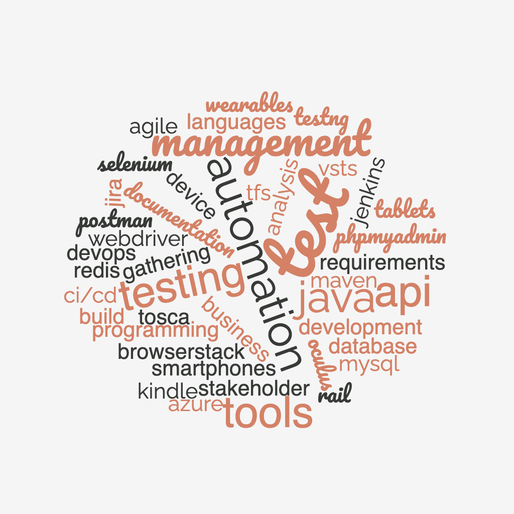
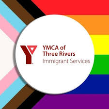
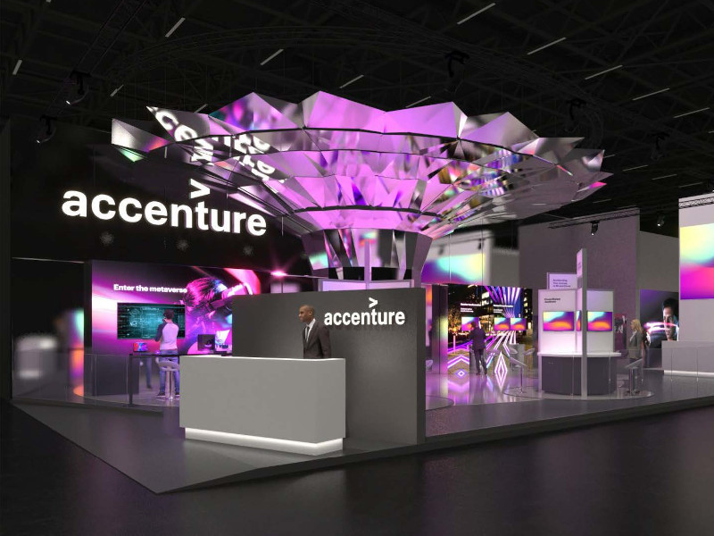
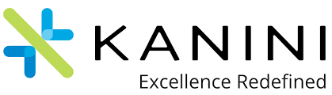

Technical Skills
Test Automation: Selenium WebDriver, Java, TestNG, Tosca API Automation
API Testing Tools: Postman
Test Management: Test Rail, TFS, Jira, Azure DevOps, VSTS
Database: MySQL, PhpMyAdmin, Redis
Device Testing: Smartphones, Tablets, Kindle, Wearables (Oculus), BrowserStack
Build Tools: Maven
CI/CD: Jenkins
Business Analysis: Requirements Gathering, Stakeholder Management, Documentation,Agile Development
Programming Languages: Java


Coordinated personalized support programs for 25+ immigrants, enhancing their adaptation by offering comprehensive local knowledge and reducing settlement challenges by 50% within the first 3 months
Strengthened partnerships between organization and local businesses to enhance collaboration opportunities.

Managed preparation and execution of test cases and scenarios, increasing test coverage by 25% and improving defect detection rates.
Successfully performed UI testing, XR Testing in 2D and 3D, and API Testing using Postman , reducing critical bugs in production by 30% .
Collaborated with stakeholders to gather requirements, providing timely updates and addressing concerns, leading to 40% reduction in project delays.
Tested and validated immersive VR applications on platforms like AltspaceVR and Microsoft Mesh, enhancing user experience and reducing usability issues by 20% .

Developed and executed test cases and scenarios, achieving 35% reduction in defects and 20% improvement in test cycle time.
Enhanced product quality and team productivity by reducing defects by 35% through improved communication and quicker feedback loops.
Actively engaged in Agile ceremonies, leading to 30% increase in sprint velocity and improved team collaboration.
Led development of API automation scripts using Tricentis Tosca , which resulted in a 60% reduction in testing time for RESTful APIs.
Served as Business Analyst for new system implementation project, improving customer service efficiency by 40% and increasing user satisfaction.